Foundations of Deep Learning Pipelines and Architectures
A controlled five-model comparison on Fashion-MNIST
1. Problem Statement
Given a 28×28 grayscale image of a clothing item, predict one of ten Fashion-MNIST classes. The task is a controlled comparison of five architecture families under one data split and evaluation protocol: a linear/softmax classifier, an MLP, a self-designed CNN, a GRU, and a Transformer. The comparison uses accuracy, macro-F1, parameter count, training time, inference time, learning curves, confusion matrices, and qualitative examples — not accuracy alone.
2. Dataset and EDA
Dataset: Fashion-MNIST (Xiao et al., 2017), obtained through
torchvision.datasets.FashionMNIST; MIT license. It contains
70,000 28×28 grayscale images in 10 classes, with the official
60,000/10,000 train/test split.
Split: the 60,000 training images were split with
train_test_split(test_size=0.2, stratify=y, random_state=42),
giving 48,000 train / 12,000 validation / 10,000 test images.
The split is shared by every model. The dataset is balanced: 4,800 training,
1,200 validation, and 1,000 test images per class.
Preprocessing: images are converted to float,
scaled to [0, 1], then z-scored with the training-set mean (0.2863) and
standard deviation (0.3532). The same transform is applied to validation and
test. No augmentation is used in the main comparison.
EDA: class distribution, pixel-value and non-zero-pixel distributions, near-black background statistics, and representative samples per class are in assignment1/notebooks/eda.ipynb.
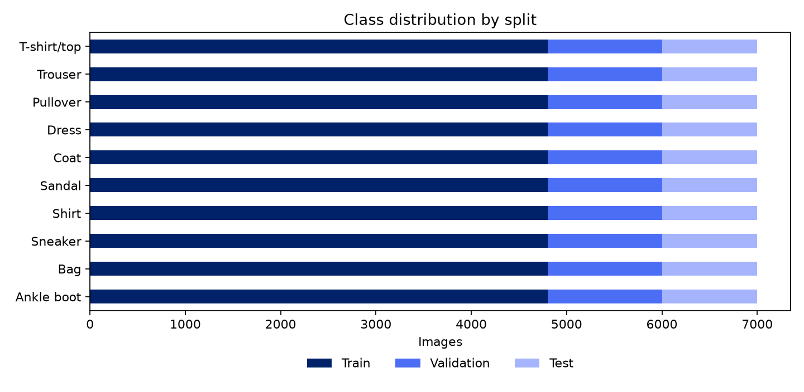
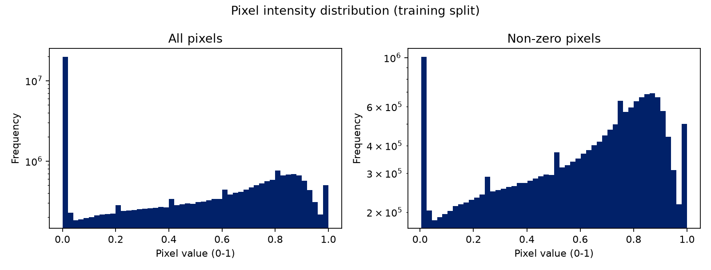
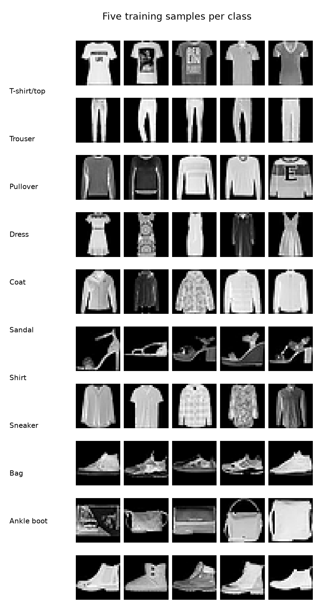
3. Methodology
| Model | Input representation | Architecture | Parameters |
|---|---|---|---|
| Linear | Flattened 784-vector | Linear(784 to 10) | 7,850 |
| MLP | Flattened 784-vector | 784-256-128-10, ReLU | 235,146 |
| CNN | 28×28 image | two 3×3 conv blocks with ReLU and 2×2 max-pool, 32/64 channels; MLP head 3136-128-256-10 | 455,946 |
| GRU | 28 row tokens, each 28-dimensional | GRU(input 28, hidden 128), final hidden state, Linear(128 to 10) | 61,962 |
| Transformer | 28 row tokens, each 28-dimensional | Linear(28 to 64), fixed sinusoidal positions, 2 encoder layers (4 heads, FFN 128), mean pooling, Linear(64 to 10) | 69,450 |
All models output raw logits and are trained with cross-entropy loss. The CNN is self-designed and trained from scratch; no pretrained backbone is used. The GRU and Transformer both read the image as 28 rows, so their difference isolates recurrence versus self-attention.
4. Experimental Setup
- Optimizer: Adam, learning rate 1e-3.
- Batch size: 64; epochs: 10 for every model.
- Loss: CrossEntropyLoss on raw logits.
- Gradient clipping: max norm 1.0 for all models.
- Seed: 42 (NumPy and PyTorch).
- Variance: results are not bit-identical across reruns; GPU non-determinism and mixed precision (AMP), where enabled, cause small fluctuations.
- Checkpoint selection: best validation macro-F1.
- Augmentation / scheduler / early stopping: none.
- Hardware: NVIDIA GeForce RTX 3050 Laptop GPU (4 GB), CUDA 13.0.
- Software: Python 3.14.7, PyTorch 2.14.0, torchvision 0.29.0.
5. Results
Test metrics are on the official 10,000-image test set. The best checkpoint was selected by validation macro-F1.
| Model | Params | Best epoch | Val acc | Val macro-F1 | Test acc | Test macro-F1 | Train (s) | Inference (ms/sample) |
|---|---|---|---|---|---|---|---|---|
| Linear | 7,850 | 8 | 85.89% | 85.94% | 84.10% | 84.15% | 9.6 | 0.005 |
| MLP | 235,146 | 8 | 89.55% | 89.57% | 87.89% | 87.89% | 12.8 | 0.006 |
| CNN | 455,946 | 7 | 92.76% | 92.77% | 91.79% | 91.79% | 20.5 | 0.010 |
| GRU | 61,962 | 8 | 90.13% | 90.09% | 88.93% | 88.85% | 52.5 | 0.025 |
| Transformer | 69,450 | 8 | 89.60% | 89.59% | 88.71% | 88.69% | 32.5 | 0.012 |
Per-class F1 scores
Sorted from hardest to easiest for the CNN.
| Class | Linear | MLP | CNN | GRU | Transformer |
|---|---|---|---|---|---|
| Shirt | 0.601 | 0.682 | 0.765 | 0.712 | 0.710 |
| T-shirt/top | 0.791 | 0.826 | 0.867 | 0.839 | 0.824 |
| Coat | 0.748 | 0.803 | 0.878 | 0.814 | 0.812 |
| Pullover | 0.726 | 0.781 | 0.879 | 0.807 | 0.803 |
| Dress | 0.849 | 0.884 | 0.918 | 0.890 | 0.896 |
| Sneaker | 0.922 | 0.944 | 0.956 | 0.949 | 0.946 |
| Ankle boot | 0.946 | 0.959 | 0.967 | 0.957 | 0.955 |
| Sandal | 0.931 | 0.965 | 0.977 | 0.972 | 0.968 |
| Trouser | 0.966 | 0.981 | 0.986 | 0.978 | 0.981 |
| Bag | 0.935 | 0.964 | 0.987 | 0.968 | 0.974 |
Training and validation curves
Click any figure to open it full-size.
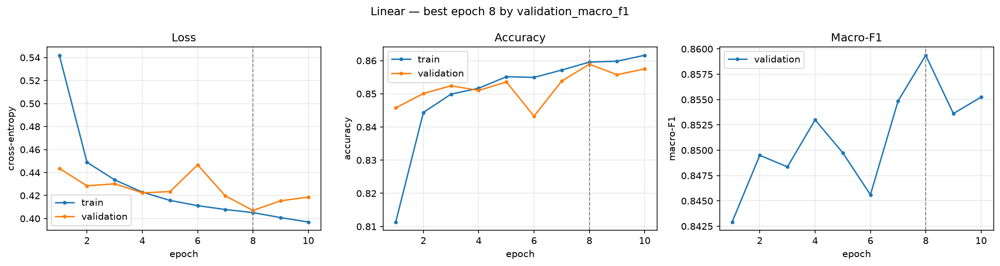
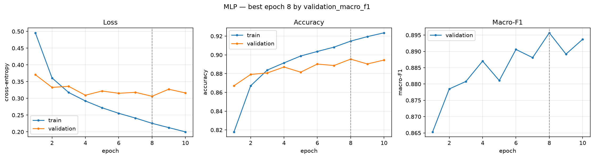
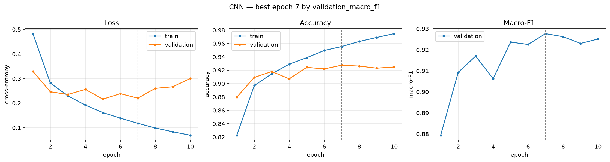
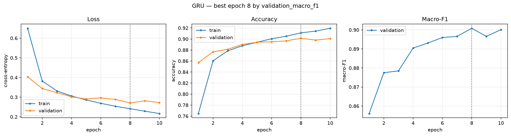
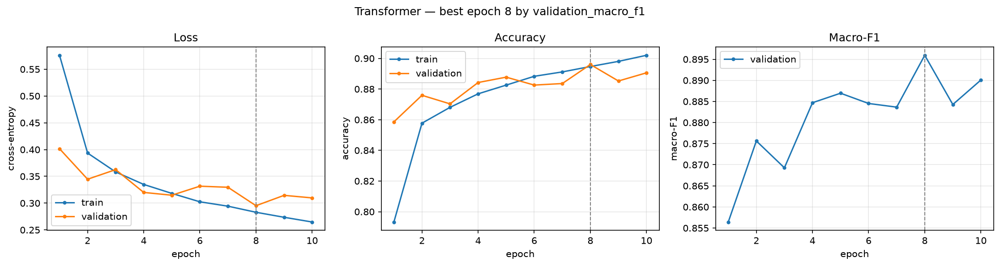
Confusion matrices
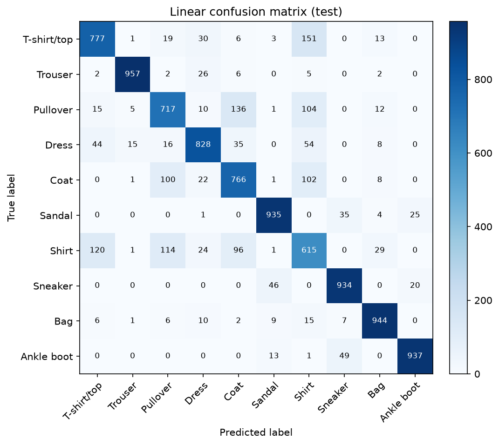
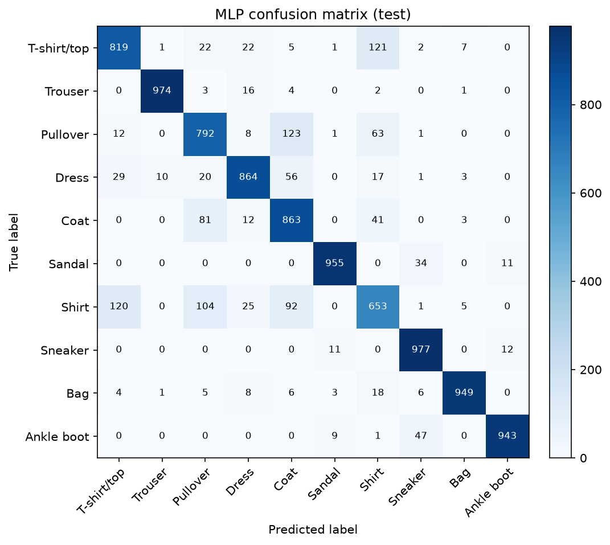
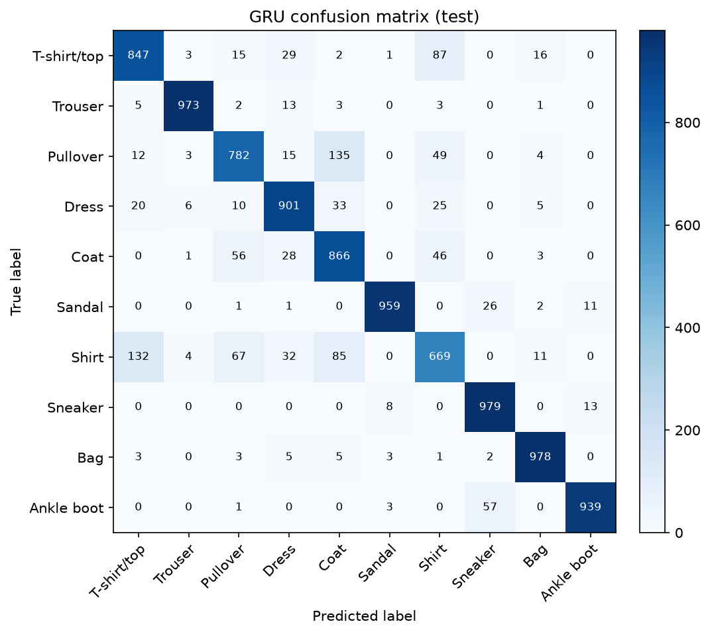
Correct and incorrect predictions
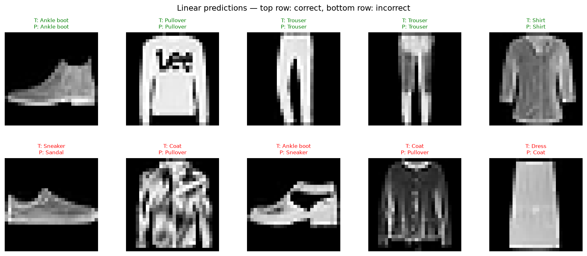
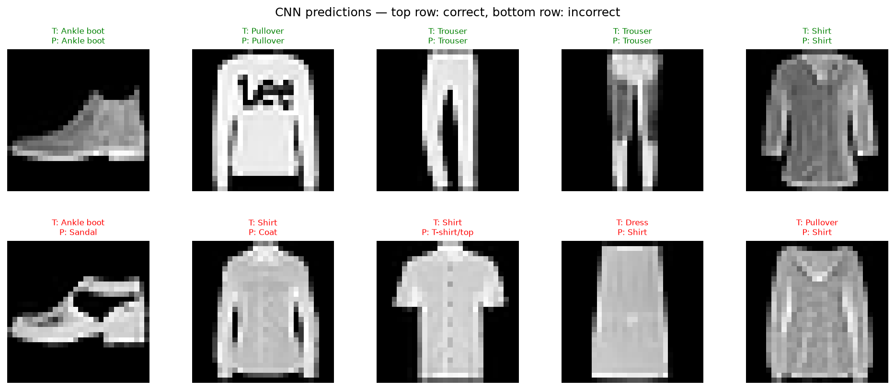
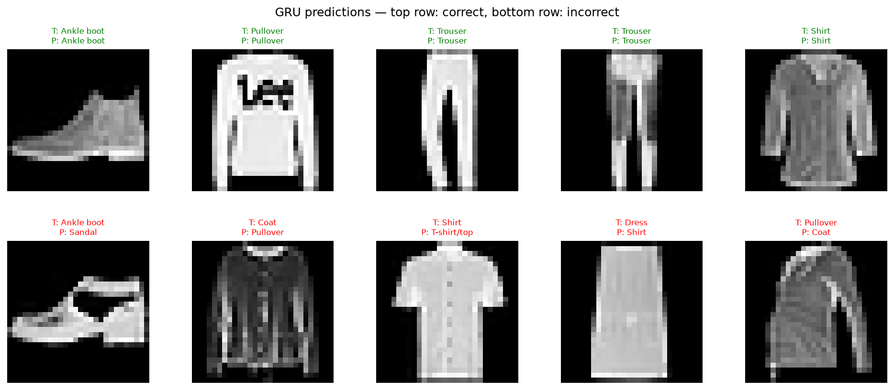
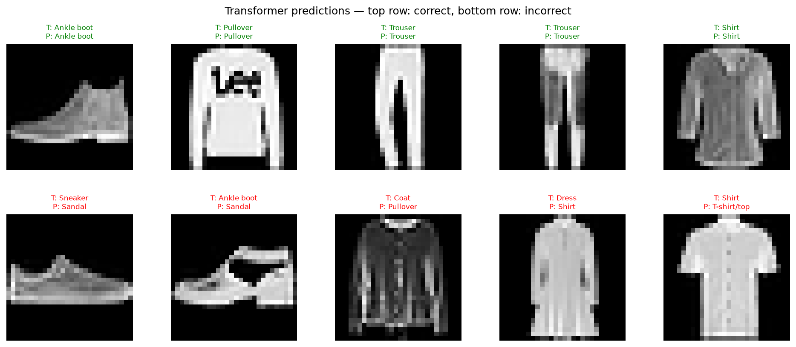
6. Comparison and Discussion
The CNN is the strongest model: 91.79% test accuracy and 91.79% macro-F1. It is 2.9 points above the GRU, 3.1 above the Transformer, 3.9 above the MLP, and 7.7 above the linear classifier.
This follows from inductive bias. Convolution preserves local 2-D structure; the MLP and linear model flatten the image; the GRU and Transformer read rows and must learn spatial relations indirectly. The GRU is the best sequence model at 88.93% with 61,962 parameters. The Transformer is close at 88.71% with 69,450 parameters. Parameter count alone does not explain performance: the 235,146-parameter MLP is below the much smaller GRU.
7. Error Analysis
The main error group is Shirt, T-shirt/top, Pullover, and Coat. These classes share similar silhouettes at 28×28 and lose color cues in grayscale. The CNN reduces this confusion but does not remove it: T-shirt/top misread as Shirt (99), Shirt misread as T-shirt/top (94), Shirt misread as Coat (63), Shirt misread as Pullover (56), Coat misread as Shirt (49), and Coat misread as Pullover (47). Shirt remains the hardest class for every model; its CNN F1 is 0.765 versus 0.601 for Linear.
Error group summary
| Model | Total errors | Upper-body errors | Within upper-body | Footwear errors | Cross-group |
|---|---|---|---|---|---|
| Linear | 1,590 | 1,125 | 963 | 194 | 7 |
| MLP | 1,211 | 873 | 784 | 125 | 7 |
| CNN | 821 | 611 | 530 | 99 | 2 |
| GRU | 1,107 | 836 | 686 | 123 | 3 |
| Transformer | 1,129 | 835 | 732 | 127 | 6 |
Footwear errors are smaller and mostly within Ankle boot, Sneaker, and Sandal. The linear and MLP models confuse these more often because they have no local shape detector. Possible improvements are light augmentation, patch tokens for the Transformer, stronger regularization, and a CNN-sequence hybrid.
8. Limitations and Conclusion
This comparison uses one dataset, one seed, a fixed 10-epoch budget, and no augmentation. The sequence models use row tokens rather than patches. The results are therefore specific to this protocol; multi-seed runs and a patch-token ablation would strengthen them.
Under this protocol, the CNN is best by accuracy and macro-F1. The GRU is the best sequence model with far fewer parameters. The linear model and MLP show the value of nonlinear and spatial inductive bias.
9. Reproducibility and Deliverables
- Source code: main.ipynb, models/, training_loop.py, utils/dataloader.py, utils/experiment_utils.py.
- Checkpoints: assignment1/checkpoints.
- Results: assignment1/results.
- Report, slides, video: report, slides, video.
- AI usage disclosure: assignment1/AI_USAGE.md.
How to reproduce
git clone https://github.com/DangXiMi/CO3133-DeepLearning.git cd CO3133-DeepLearning pip install -r assignment1/requirements.txt jupyter notebook assignment1/notebooks/main.ipynb
Run all cells from top to bottom. The dataset downloads through
torchvision; artifacts are written to assignment1/checkpoints
and assignment1/results. Results may fluctuate slightly across
reruns because of GPU non-determinism and mixed precision (AMP) where enabled.